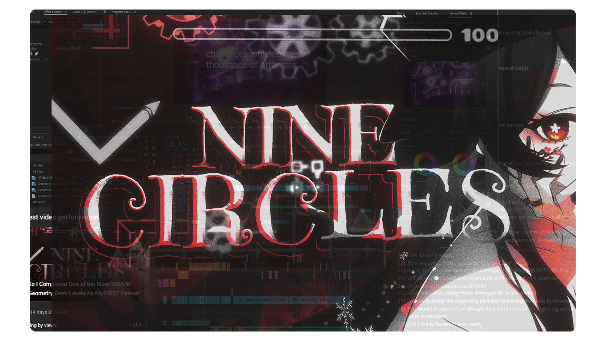
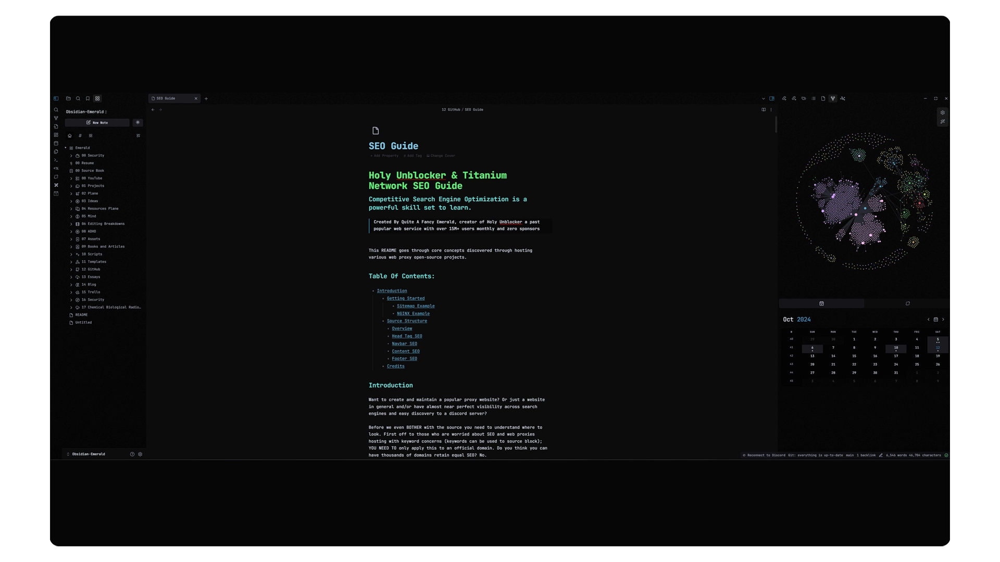
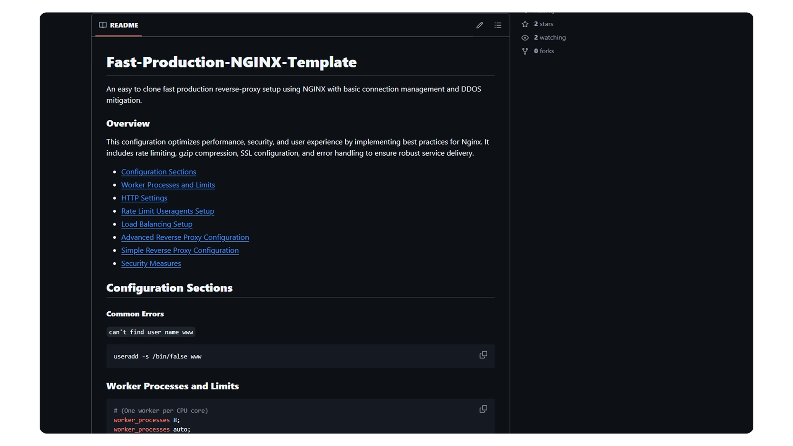

I've worked on this project for over four years, significantly enhancing its functionality and performance. The project has seen over 1.3 million lines of code changed, with contributions from 21 developers and over 1500 commits.
Holy Unblocker LTS is a cutting-edge web proxy service that allows users to access websites that may be restricted by network policies or extensions directly within their browser, eliminating the need for downloads or installations. It emphasizes security, privacy, and user control, making it a robust solution for web access.
At its peak, Holy Unblocker attracted over 1 million unique users monthly and achieved more than 10 million views each month, showcasing its widespread adoption and effectiveness in bypassing restrictions.
A modern CLI tool enhancing performance and productivity.
Slate Desktop for Windows 11
- Windows Environment CLI -
- (October 2024) -
Slate Desktop is a powerful Windows environment and CLI tool focused on performance, productivity enhancements, shell modifications, and a modern aesthetic tailored specifically for Windows 11. Unlike other modpacks that revert to outdated styles, Slate Desktop elevates the sleek, modern look of Windows 11 with performance and visual improvements.
One of the core principles of this project is full transparency—it avoids hidden automation, untrusted applications, and the use of untrusted, pre-modded ISOs. Instead, Slate Desktop employs a seamless, CLI-based process to download assets and automatically import necessary configurations via a sources.json file. This ensures that each component of the setup is openly visible and customizable.
After experimenting with Windows 11/10 modding for a few years, I decided to assemble a collection of popular tools I've used to optimize and design my system.
This was a massive project I worked on for almost a year despite it being only four minutes long. It marked a huge leap in editing skills, composition style, and color grading.
Every single clip has some sort of compositing done via color, camera movement, or sound design. Sound was the biggest experiment for this video; I really tried to focus on that "cinematic" feel by actually working on sound first before visuals.

Thumbnail for Nine Circles Video Editing Project
Nine Circles Video
- First Edited Video -
- (2022) -
This project marked my start into video editing. It was a challenging but enjoyable process, and I used MagicHDR for the "RTX" visual effects and stock Premiere Pro for everything else.
The final result was successful thanks to the combination of transitions, music, and visual effects. Thumbnail by sedex!
Screenshot of the Tourmaline Windows 11 themed desktop inspired by SSC23 submissions.
Tourmaline
- 23H2 Windows 11 Themed Desktop -
- (2023) -
Had some massive inspiration from some SSC23 submissions and decided to create my own twist for my own desktop. Thanks to niivu for the super clean theme NUXI.
Screenshot of Prismalline OS v1, a Windows 11 22H2 themed desktop with optimizations for performance.
Prismalline OS v1
- Windows 11 22H2 Themed Desktop -
- (2023) -
Tried doing some fun optimizations to an old laptop of mine with the same Tourmaline theming mods (and further tweaks)!
Features crazy optimized running under 1.5GB RAM (0-5% CPU) on idle with full Microsoft store/feature functions. No need for patching using SecureUxTheme/UltraUXThemePatcher.
(Windows Update possibly broken but drivers can be updated)
A screenshot of Tourmaline v3, showcasing the Windows 11 22H3 themed desktop with acrylic effects on UWP apps.
Tourmaline v3
- Windows 11 22H3 Themed Desktop -
- (2023) -
Massive update to my desktop! Acrylic effect now applies to UWP apps, etc., along with taskbar modifications with Windhawk. Essentially Windows 11 with every type of improvement possible. By popular demand, I am linking everything used with my system modding.
An infographic showcasing the Oxide web development project for the Titanium Network community site.
Oxide
- Web Development Org. Project -
- (2022) -
The official community site for Titanium Network. This is a website that I've created and since contributed to. The project has received many contributions from the community since its release.
An infographic showcasing the Oxide-Docs site, the official documentation for the Titanium Network SDK and wiki.
Oxide-Docs
- Web Development Org. Project -
- (2022) -
The official SDK/wiki documentation site for Titanium Network, an organization that creates advanced web proxy services through the progression of web proxy technologies. This is a website that I've created and since contributed to. The project has received many contributions from the community since its release.
Built using Docusaurus 2. If you wish to contribute, make a PR.

An infographic cover image for the Advanced Search Engine Optimization Guide.
Advanced Search Engine Optimization Guide
- Web Development Guide -
- (2023) -
Competitive Search Engine Optimization (SEO) is a powerful skillset to learn. This README goes through core concepts discovered through hosting various web proxy FOSS projects intended for Titanium Network community members or those aspiring to learn SEO.
This guide is a collection of knowledge I learned when hosting and starting off with Holy Unblocker. Since then, many of my sites have become top-ranking on Google with ease. (Just try searching Quite A Fancy Emerald or Holy Unblocker)

An infographic cover image for the Fast Production NGINX Template.
Fast Production NGINX Template
- Web Development Guide -
- (2023) -
This repository offers a quick and easy-to-clone setup for a high-performance production reverse proxy using NGINX, complete with essential connection management and DDoS mitigation features.
Features optimizations to performance, security, and user experience by implementing best practices for NGINX. It includes rate limiting, gzip compression, SSL configuration, and error handling to ensure robust service delivery.
Essentially meant for a fast copy/paste repository for setting up websites, etc.
Cover image for the Existing.moe Discord.js bot, known for its humorous features.
Existing.moe
- Discord.js Bot -
- (2022) -
The one and only legendary anime Discord bot with over 90 commands! This project was mostly a joke I made for the Titanium Network community, but I still maintain it. The source code is beyond cursed.
A screenshot of the Geometry Dash Level Graphing Utility showcasing its graphical interface.
Geometry Dash Level Graphing Utility
- Python Utility -
- (2023) -
This tool allows you to graph or export level IDs from the game Geometry Dash on a monthly, weekly, or yearly basis.
It fetches approximate ID values attached to a certain date from the GDHistory API site. This tool uses matplotlib for the graph view and also supports an organized CSV export table for those who wish to export data.